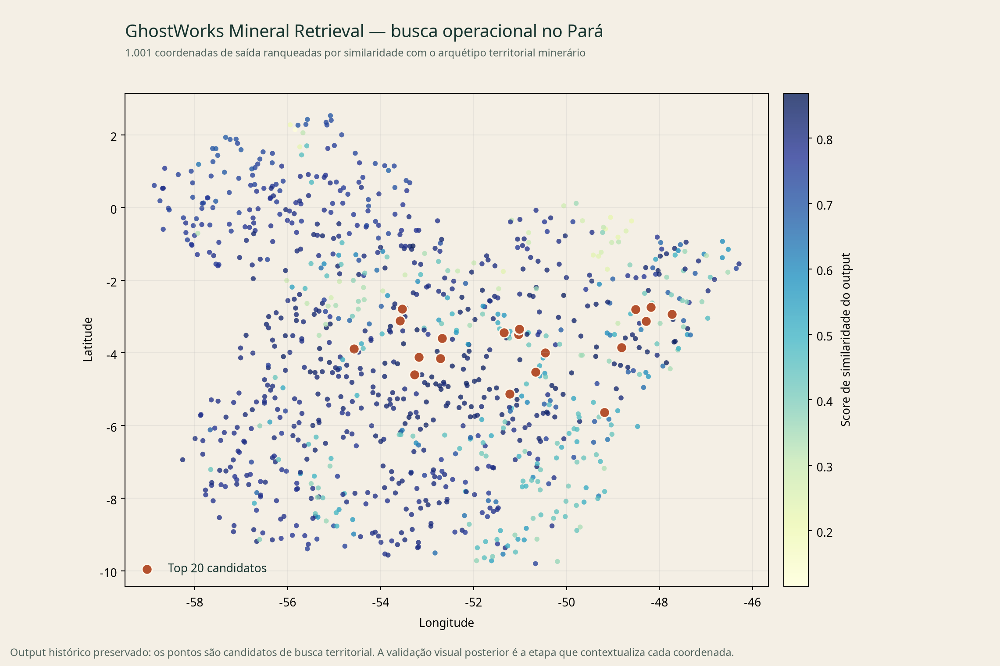
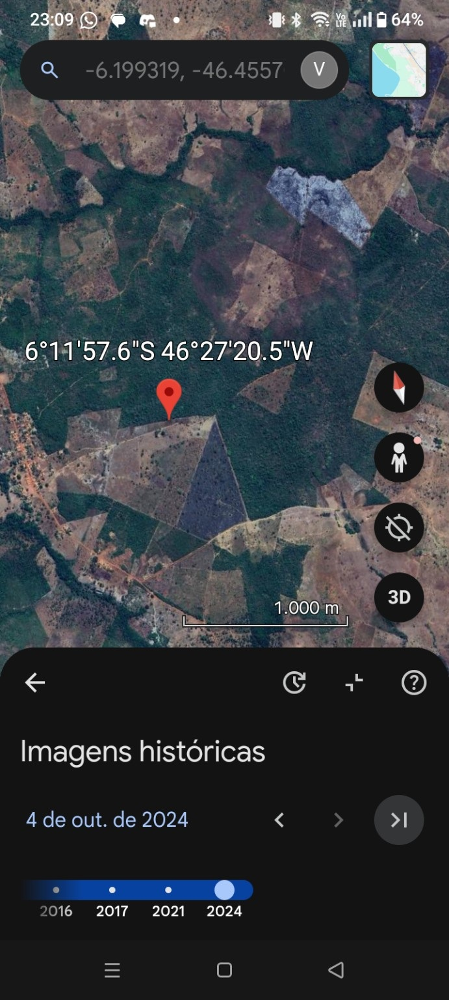
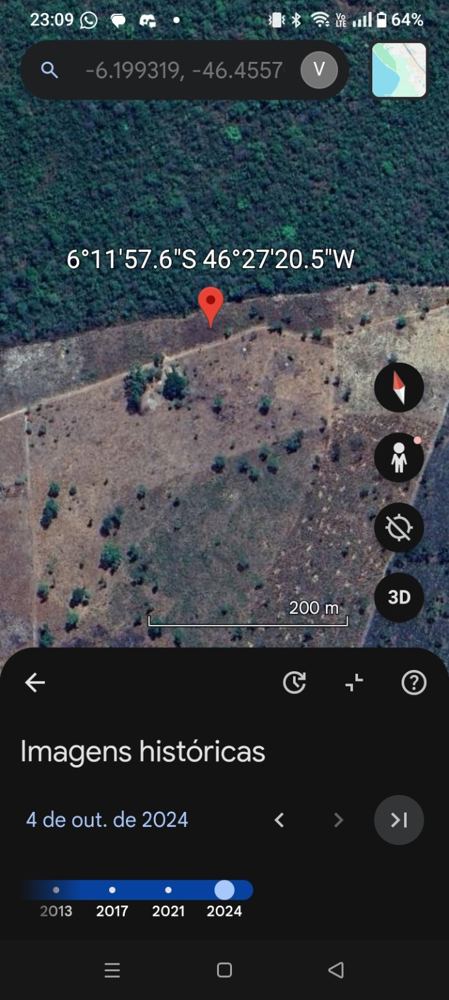
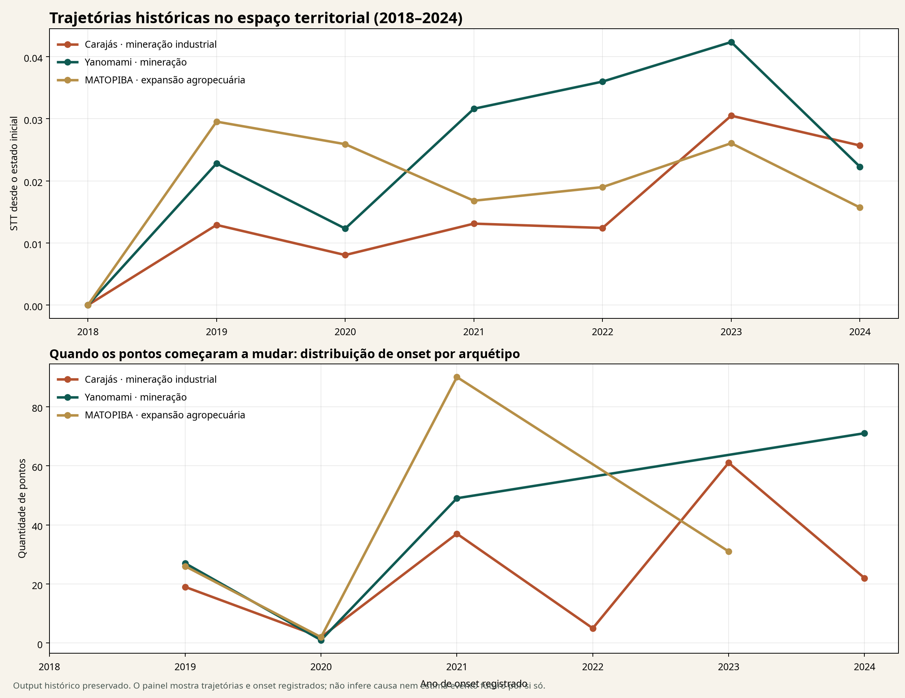

01 / REFERÊNCIA
277 âncoras.Exemplos minerários organizados para formar uma assinatura operacional de comparação.
GhostWorks Mining organiza imagens, sensores, assinaturas territoriais e séries de tempo para responder uma pergunta operacional: onde existe uma mudança ou um padrão minerário que merece ser visto primeiro?
Não é uma tela que “detecta minério”. É uma cadeia já operada: referências conhecidas → assinatura territorial → busca espacial → candidatos → validação visual e contexto.
O caso SIGMINE/Pará mostrou como usar exemplos minerários conhecidos para construir uma assinatura operacional e pesquisar, fora dessas âncoras, coordenadas com padrão territorial semelhante.

“Quais pontos desta área merecem verificação porque já carregam uma assinatura territorial semelhante a uma operação minerária conhecida?”
O caso Pará não ficou em um CSV. Depois do ranking, coordenadas candidatas foram abertas em imagem histórica, em escala regional e local. Os prints preservam a parte mais importante do percurso: uma assinatura territorial vira uma pergunta verificável no mundo.
Exemplos minerários organizados para formar uma assinatura operacional de comparação.
Uma fila espacial fora das âncoras conhecidas, com prioridade para os candidatos mais semelhantes.
O candidato deixa de ser score quando alguém abre a imagem, examina o contexto e decide o próximo passo.


A primeira rodada vai comparar a fila GhostWorks com pontos aleatórios e regras geográficas simples. A pergunta é operacional: se houver orçamento para olhar 20 lugares, quantos deles viram leads que merecem aprofundamento?
A mineração entra como uma combinação de forma, textura, cobertura, infraestrutura e transformação no tempo. O GhostWorks organiza essas camadas numa sequência de decisão.
NDVI, SAR, VIIRS, temperatura e outros sensores ajudam a interpretar o que um ponto territorial está expressando.
Exemplos de mineração deixam uma referência operacional que pode ser representada e comparada em novos lugares.
O motor devolve uma fila espacial de candidatos; ela organiza atenção antes de qualquer trabalho de campo ou análise detalhada.
Uma área pode estar estável, acelerando ou adquirindo um novo padrão. A série temporal separa esses ritmos.
Carajás, Yanomami e MATOPIBA formam referências de regimes diferentes. A comparação temporal mostra quando grupos de pontos começaram a mudar e como essa mudança se distribui no território.
Os outputs históricos já calculam trajetória, drift e onset por ponto. Isso permite localizar early movers e construir uma fila de investigação antes que a mudança apareça apenas como fato consumado.
Na prática, a leitura combina comparação com referências minerárias, variação temporal e validação visual — uma base para monitorar expansão, priorizar vistorias e formular perguntas de exploração territorial.

O GhostWorks Mining pode começar com uma área conhecida, uma operação de referência ou um recorte de interesse. A entrega organiza o que observar, onde aprofundar e quais candidatos merecem validação.
Referência minerária → assinatura territorial → busca espacial → trajetória temporal → investigação.
Ver o motor geral ↗